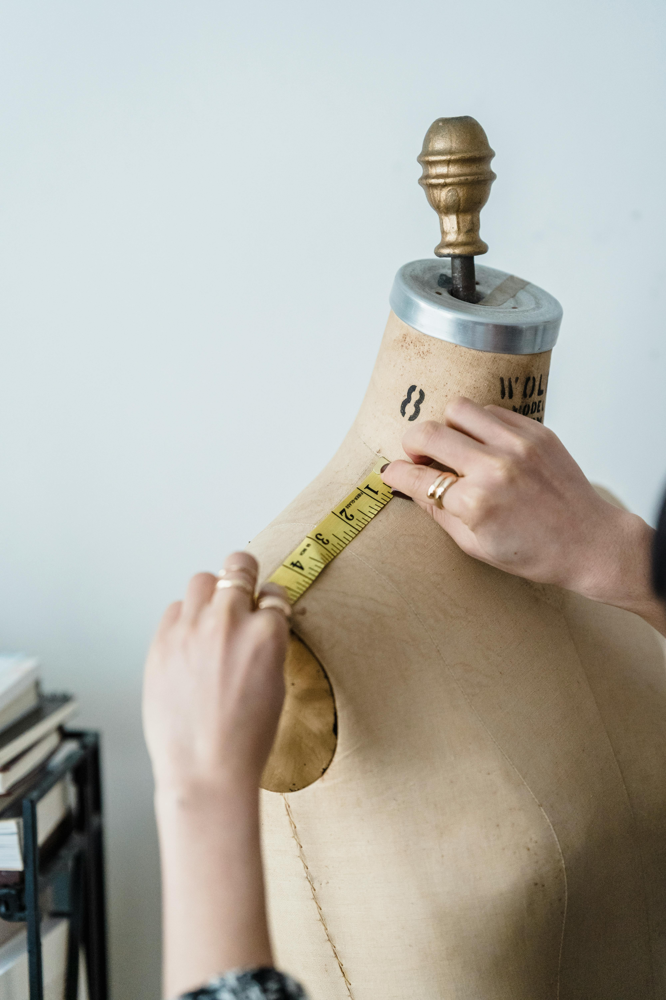

Once you have all your pieces cut out, it is then time to start sewing! According to the pattern you are following, or the one you made, this may take some time. However, once your project starts taking shape before your eyes, it all feels worth it. When you have all the pieces sewn together, it is time for your first try-on. Many people choose to make a "mock-up", or a first version, out of scrap fabric so that they don't waste their expensive fabric. Even if you had perfectly patterned or followed the pattern, you may still find something that doesn't fit quite right, maybe it's too big or too small. While the garment is still on your body, you can take it in using pins. Try to do this on existing seams, as this will make for a more coherent look. If the garment is too small, try letting out the seams a little. If there is not enough fabric, you can try to take leftover fabric, and add in a few panels.
| Measurement | In | Cm |
| Shoulder | 14 | 36 |
| Waist | 33 | 83.82 |
| Bust | 38 | 96.52 |
| Inseam | 29 | 73.66 |
| Expanded Ribcage | 35 | 88.90 |
| Hip | 36 | 91.44 |
The above table is an example of an average woman's measurements. If a person came to you with a dress that had a waist measurement of 38 in, you would need to take it in by 5 inches. For the best looking result, you always want to take in an even amount from each side. So, five divided by two is 2.5 inches. If the hips of the dress fit her well, you would want to curve the new waist measurement to the hip measurement. Take in 2.5 inches at the waist, and slowly connect down to the hip measurement. The best trick to adjusting or fitting something is to make small adjustments, then try it on, then make more adjustments as needed.

At the end of the day, a garment is supposed to fit the human, the human is not supposed to squeeze into the garment. It is imperitive that the person who is being fitted is able to just exist in the clothes, and to do normal everyday things. If you're adjusting a skirt for a friend who is hosting a dinner party, it would be okay if she wanted it to be a mermaid skirt which will somewhat impede her walking. It is also important that they are able to do not-so-normal things if the situation calls for it. For example, if you are adusting a shirt for a play about pirates, you want the person to be able to move their arms freely in order to swordfight and do other crazy stunts.
